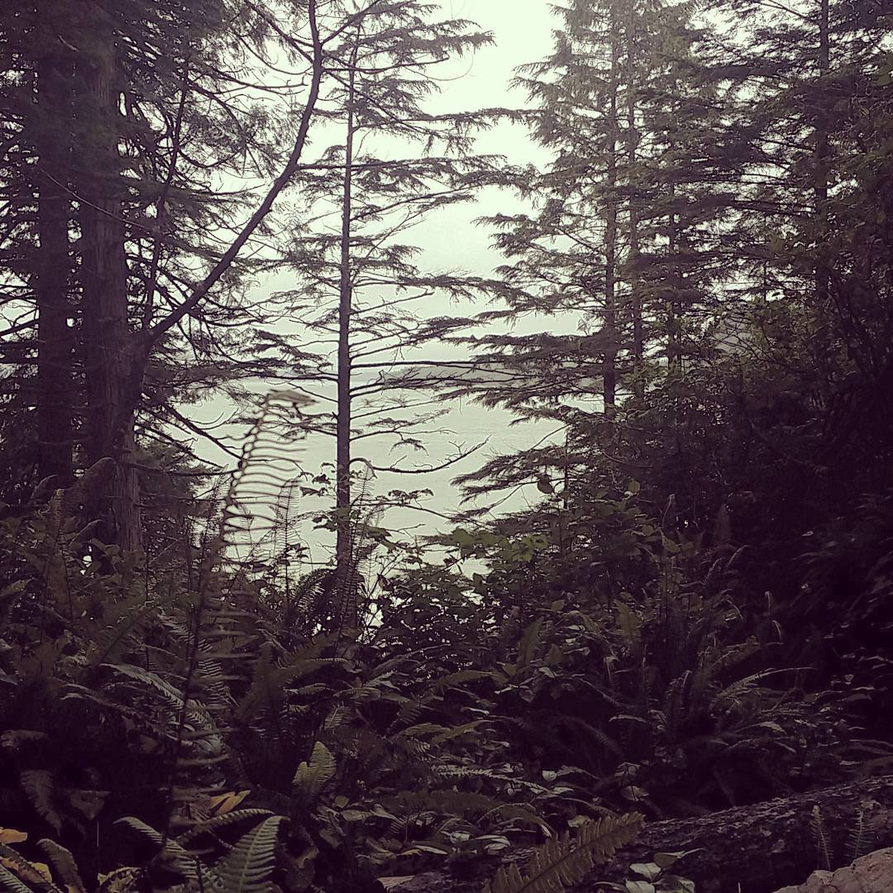

You begin to smell strong ocean...

The right fork appears to head toward the ocean. There are multiple forks off this trail, some leading to lookouts and others probably to the beach. It smells strongly of red cedar and saltwater.
Approach the lookout, or proceed down the winding beach trail?